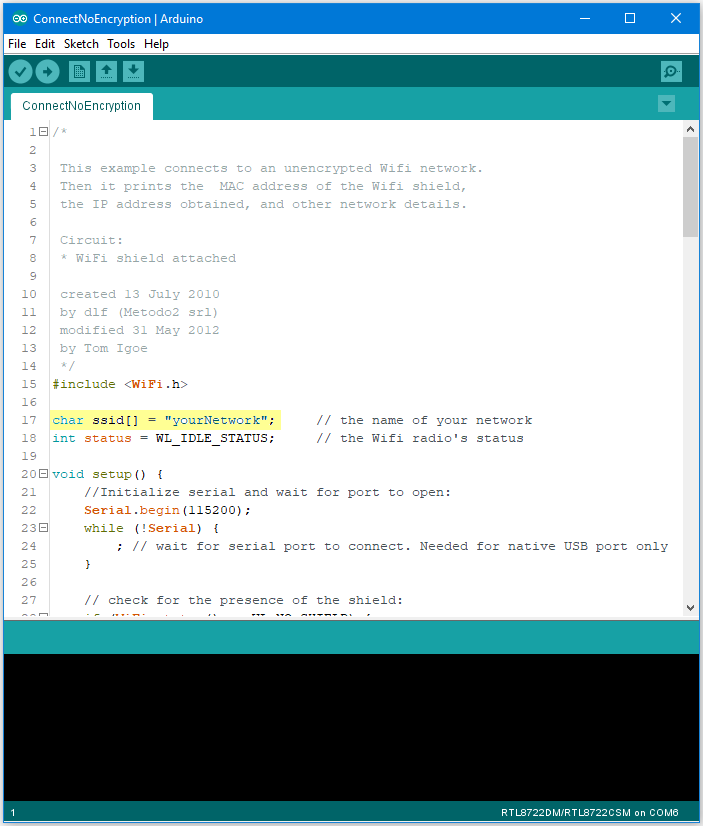
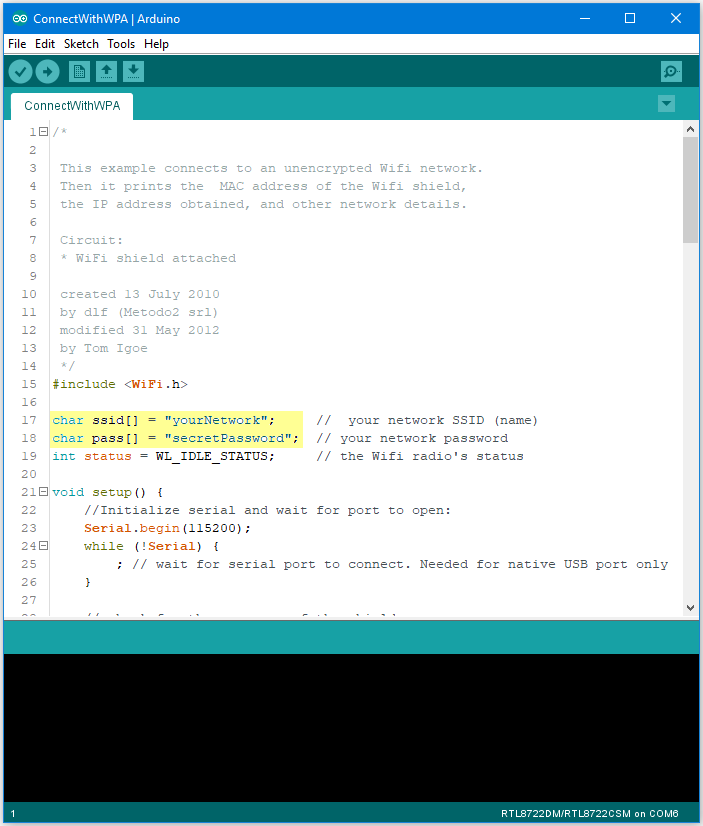
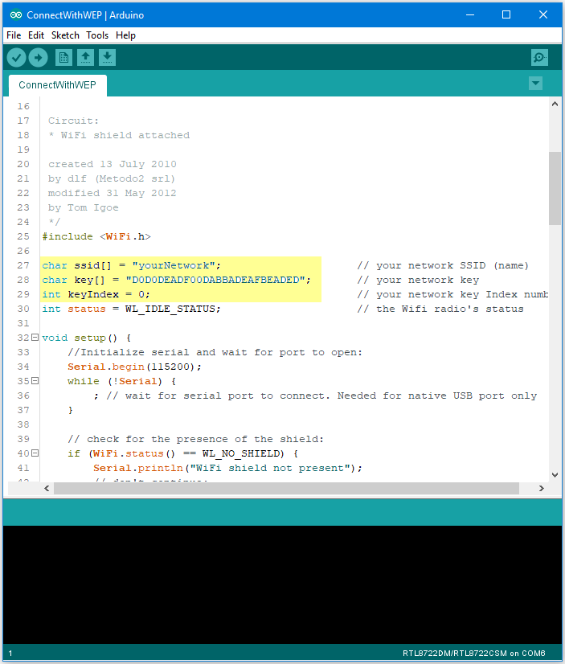

WiFi - Connect to WiFi networks
Materials
AmebaD [AMB21 / AMB22 / AMB23 / BW16] x 1
Procedure
There three common encryption type in WiFi connection. The first one is “OPEN”, which means there is no password needed to connect to this network. The second type of encryption is WPA, which requires the correct password to access. The third type is WEP, which requires a hexadecimal password and a keyindex.
In the following, we will give a brief introduction on how to establish WiFi connection with these three types of encryption on Ameba.
First, make sure the correct Ameba development board is selected in “Tools” -> “Board”.
Open (WiFi connection without password)
Open the “ConnectNoEncryption” example in
“File” -> “Examples” -> “WiFi” -> “ConnectWithWiFi” -> “ConnectNoEncryption”In the sample code, modify “ssid” to be the same as the WiFi SSID to be connected to.
Next, upload the sample code, and press the reset button on Ameba. Then you will see a message “You’re connected to the networkSSID: XXXXX”, and the information of this WiFi connection is printed in the serial monitor every 10 seconds.
WiFi connection with WPA encryption
Open the “ConnectWithWPA” example in
“File” -> “Examples” -> “WiFi” -> “ConnectWithWiFi” -> “ConnectWithWPA”In the sample code, modify “ssid” to the WiFi SSID to be connected to and “pass” to the network password.
Next, upload the sample code, and press the reset button on Ameba. Then you will see a message “You’re connected to the networkSSID: XXXXX”, and the information of this WiFi connection is printed in the serial monitor every 10 seconds.
{kind=link}
{kind=link}
{kind=link}
WiFi connection with WEP encryption
Open the “ConnectWithWEP” example in
“File” -> “Examples” -> “WiFi” -> “ConnectWithWiFi” -> “ConnectWithWEP”In the sample code, modify “ssid” to the SSID to be connected, “key” to the hexadecimal password, “keyIndex” to your key index number.
Next, upload the sample code, and press the reset button on Ameba. Then you will see a message “You’re connected to the networkSSID: XXXXX”, and the information of this WiFi connection is printed in the IDE every 10 seconds.
{kind=link}
Code Reference
WiFi.SSID() to get SSID of the current connected network.WiFi.RSSI() to get the signal strength of the connection.WiFi.encryptionType() to get the encryption type of the WiFi
connection.WiFi.BSSID() to get the MAC address of the router you are
connected to.WiFi.macAddress() to get the MAC address of Ameba.WiFi.localIP() to get the IP address of Ameba.WiFi.subnetMask() to get the subnet mask.WiFi.gatewayIP() to get the WiFi shield’s gateway IP address.Comparison with Arduino
#include to
use SPI to communicate with WiFi module.#include is not needed.